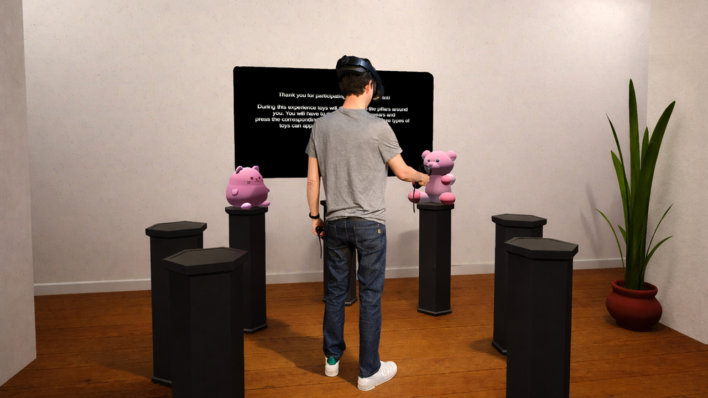

Attention shifts and serial search in the space behind us seem to work with the same cognitive mechanisms than in front of us.
Orienting attention in space is crucial for efficient perception and learning.The cognitive and neural underpinnings of spatial attention have been extensively studied in tasks requiring focusing and shifting attention across locations. However, these studies mainly explored frontal 2D visual space. Here we designed a virtual reality (VR) environment combining a visual search task with a modified Posner orienting paradigm to investigate the deployment of attention in both front and rear locations, and compare performance with classic 2D findings. We combined response times with eye-tracking data recorded in the VR headset. Twenty participants were asked to discriminate between 2 targets arranged in 4 locations around them. Targets were spatially cued (20% Valid, 80% Invalid), and presented with a varying number of identical distractors (Zero, One Near, One Far, Three) to additionally probe serial search. Target detection was faster in valid than invalid conditions, but delayed by distractors, in line with classic effects in Posner and search tasks, respectively. Eye-tracking data confirmed that attention shifts, as observed by gaze patterns over time, were tightly correlated with response times, and both were modulated by cue validity and distractor load. Our results confirm eye-tracking is a powerful tool in VR for quantifying attentional dynamics through overt gaze strategies. The behavioral and gaze data converge for targets appearing in rear or front space, suggesting that attentional orienting engages similar mechanisms of sensory competition and selection in a full 360° space (in both front and rear), supporting a functional continuity in space representation used to guide selective attention processes.
@article{deschanet2026,
author={CChloé Deschanet and Loïc Kreienbuhl and Patrik Vuilleumier and Joan Llobera"},
journal={Pre-print},
title={Attention orienting and serial search in virtual reality},
volume={},
pages={},
year={2026},
doi={},
}
If you have any questions or suggestions, please feel free to contact Joan Llobera.